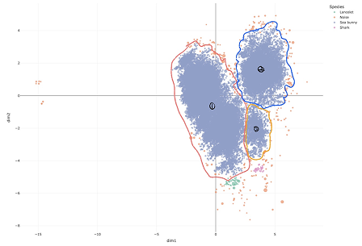

Tree of Life
Each node typically represents an individual organism, and each branch represents mutation and divergence in species. Hover over each agent for descriptive information.
Species Clusters
2D cluster of species per timestamp. Slide the time slider on the right side of the phylogenetic tree dashboard below to update this plot.

Phylogenetic Tree
Branches over evolutionary time. Red line marks selected checkpoint.